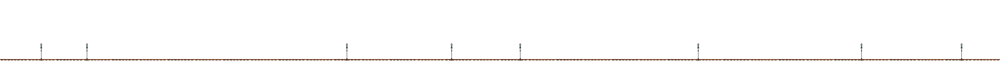

-
Formation Of Suvidha for the Rise Of Social & Environmental Justice in Uttarakhand.
 -
The Very First Project in Hand by Uttaranchal Organics in Uttarakhand.
-
Marked footprint in Madhya Pradesh with Adoption & Certification in Sustainable Agriculture.
-
Marked footprint in Jammu & Kashmir with Organic Mission for Horticulture.
-
Marked footprint in Odisha with Promotion of Diversified Organic Farming.
Also became a member of Fair Climate Network for Climate Initiatives. -
Marked footprint in Chattisgarh with Sustainable Agriculture Project.
Initiated First Climate Project in Uttarakhand for Biogas Plant Installation.
Also Initiated First Project on Health for Spreading Awareness for Tuberculosis. -
Became a Regional Council Member for PGS Certification for Pan India.
Also initiated Capacity Building Programs with Panchayti Raj Institution in Uttarakhand. -
Initiated Integrated Livelihood Support Program (ILSP) by implementing IFAD in Uttarakhand.
-
Marked footprint in 9 States of India with Union Territory Of Andamans & Nicobar, Delhi & Utter Pradesh.
Collaboration with HDFC Parivartan is implementing Holistic Rural Development Project in 10 villages of Khargon District, Madhya Pradesh.